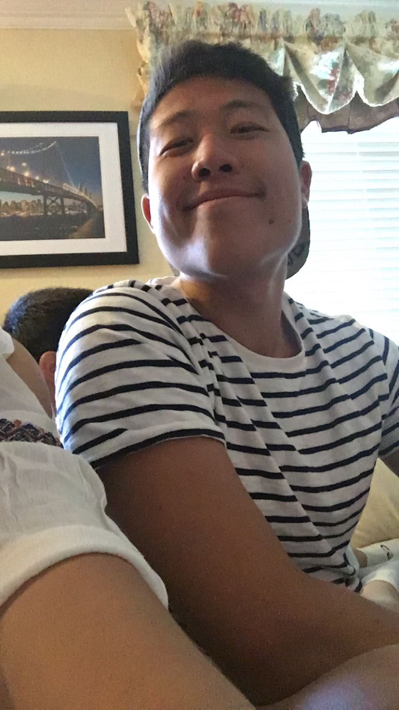

<div>
    <div style="float: left">
        <h2>Welcome to my website!<br><br>
        <small>
        Hi! I'm a senior at Duke University studying electrical & computer engineering and computer science.

        <br>
        I've been a part of the men's rowing team at Duke since my freshman fall in 2013.
        <br><br>
        Things I enjoy / hobbies:<br>
        <ul>
            <li>working on my side coding projects</li>
            <li>operating systems</li>
            <li><a href="food.html">baking and cooking</a></li>
            <li>a variety of sports - especially skiing and basketball</li>
            <li>meeting new people and making friends</li>
        </ul>
        </small>
        </h2>
    </div>
    
</div>